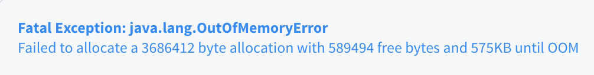
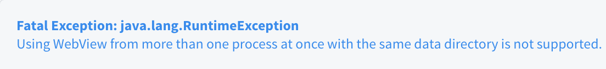
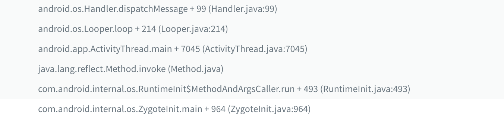

A crash can not just warn you that you’ve done something wrong with your code, but also makes you suffer if the message is ambiguous. What’s worse is sometimes you won’t get any message and there’s nothing you can do but to hope that it will disappear eventually.
Types of crash
If you categorize crashes that you will face, here’s what you can get:
- Ambiguous messages and solvable
- Ambiguous messages and solvable, but unpredictable
- No messages, and unsolvable
Ambiguous messages and solvable

The message only tells you the system is run out of memory, and it’s pretty ambiguous since memory issue is a random issue. You won’t know where and when that your app will drain the memory, but it’s still solvable with the following steps:
- Figure out what’s the size of the Bitmap that the system is trying to create.
- Find which lines of codes will create an image with the size.
- Make the system to load the image with a smaller Bitmap.
No messages, and unsolvable
Sometimes there are framework related crashes, which may be caused by Google itself or the OEMs, then you may get a crash like:
That’s really nothing you can do about it because you don’t even know where to begin.
Ambiguous messages and solvable, but unpredictable

The intro of the category is put at the end on purpose. The crash will be the example throughout the article. Here’s some context about the crash:
- Starting from Android 9(28+), WebView’s data folder is not allowed to be shared between processes. If you do that, you will get a crash like this.
We can simply solve it by calling setDataDirectorySuffix(String suffix) to assign a suffix for each WebView’s data folder in the process. The change is for security purpose, you can check the official document for more detail.
A real case
In our scenario, we don’t use multi processes explicitly. For some reason, we still get this crash occasionally. We don’t want to call setDataDirectorySuffix() at very first place because the product is not a multi processes application.
Instead, we call only when we need to, which means we will call that only if the exception is thrown. So the solution is very straightforward:
- Catch exception.
- Call setDataDirectorySuffix().
Catch exception
When the app is started, the launch process will call ActivityThread.main(), and a few things will happen inside:
- A Looper will be created and run.
- A ActivityThread will be created with a Handler.
All of these will be run on a thread, so the mechanism behind them is like the HandlerThread. You may quickly guess that everything happens on the main thread, will be passed through the Handler.
That’s why when you look at the stacks of main thread exception, the beginning of the stacks will be like:

That means if we can just wrap dispatchMessage() with a try-catch, we can catch the exception and prevent our app from crashes. But as you can see, this part is inside the framework, which you can’t modify.
Custom callback
But don’t give up, let’s look at the source code of dispatchMessage():
// In Handler.java |
You can see there is a mCallback, which means we can assign a custom callback:
// In MainHandlerCallback.java |
Now you have a callback which can not just help you to catch the exception, but also keep the original behavior since the message is still passed into the original Handler.
Hook callback
The next problem will be:
- how do you fetch the instance of the main thread
Handler?
With Java, it will be no doubt that you can use reflection. So we need to find where to locate the Handler. Let’s look back to the AndroidThread.main() again:
// In ActivityThread.java |
The field sCurrentActivityThread will keep an instance of ActivityThread before the Looper is running. It’s defined as static volatile so the value is not just a class variable, but also guaranteed to have only one copy in a multithread application. The implementation will be like as follow:
val clazz = Class.forName("android.app.ActivityThread") |
Once you get the instance of ActivityThread, the rest will be easy:
// ActivityThread mH |
Now you have a custom callback, and also the way to hook the callback onto the main thread Handler. The next thing you need to know is when.
When to hook
The timing to hook the callback will differ from case to case. But normally you will want to hook as earlier as possible, so we can hook our callback in Application.onCreate():
// In Application |
Now all the exceptions that throw on main thread will be caught by our custom callback.
Call setDataDirectorySuffix to assign a specific suffix.
Back to the case, now we can know when the exception is thrown, call setDataDirectorySuffix() explicitly, and then ignore the exception.
Summary
Use reflection to hook a callback to monitor exception is not the best solution. Here’s the caveat you need to know:
- The solution is unstable because it relies on the name and type of the field, Google can change it in any future version.
- If we overuse it, we may overlook some big problems.
We should use the solution wisely and always try to solve the issue before ignoring it.